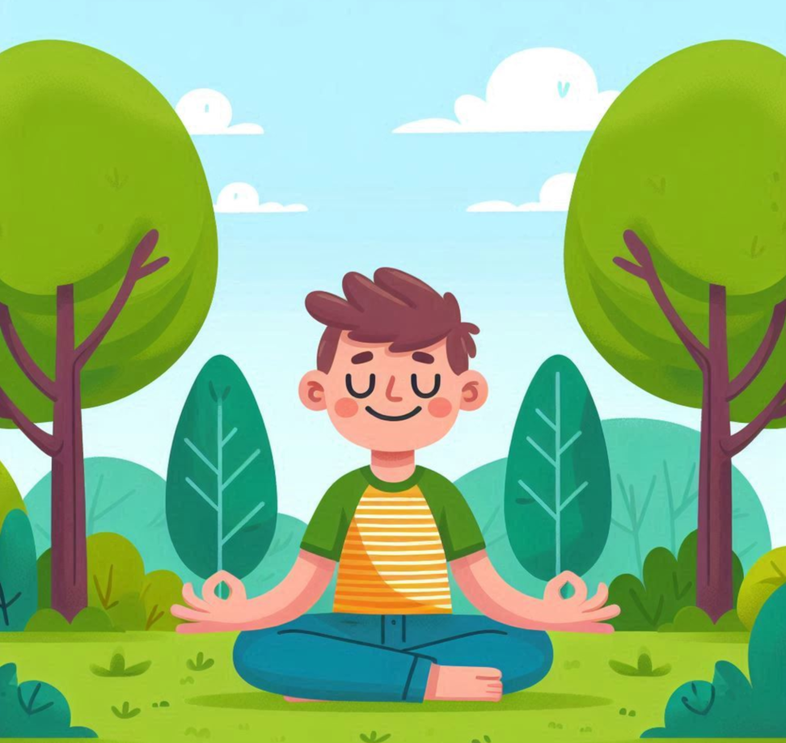
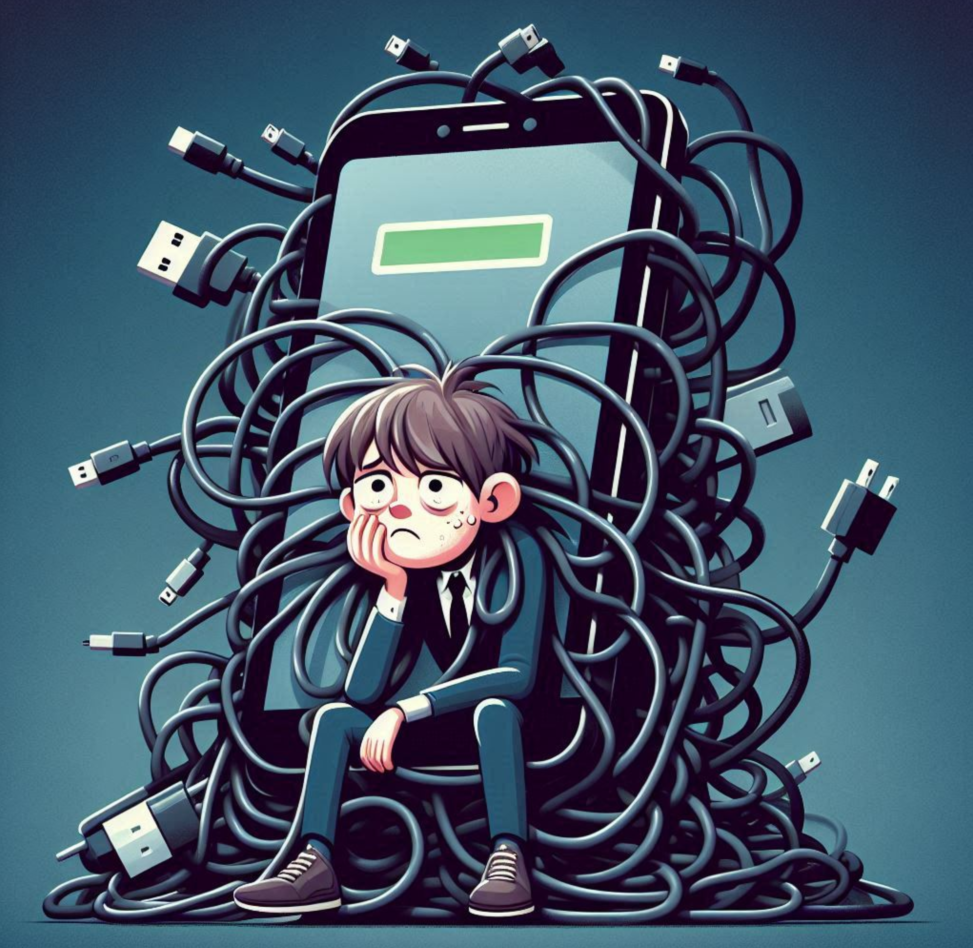

✨ 디지털 청정 구역의 지배자 ✨
내 점수: -점
축하합니다! 당신은 스마트폰의 주인이자 디지털 세상의 모범 시민입니다. 가끔 로그아웃해도 불안하지 않은 당신, 진정한 고수시네요.
이렇게 실천해보세요!
- 주 1회 '디지털 금식'의 날 실천하기: 저녁 시간 만이라도 의도적으로 폰을 멀리하고 책이나 음악과 함께 해보세요.
- 새로운 오프라인 취미 탐색하기: 당신의 균형감각을 더욱 빛내줄 새로운 활동을 찾아보는 건 어떨까요?
- 선한 영향력 전파하기: 주변에 스마트폰 때문에 힘들어하는 친구가 있다면, 당신의 꿀팁을 슬쩍 공유해주세요.
📱 스마트폰과 밀당하는 사이 💔
내 점수: -점

스마트폰과 애증의 관계에 있으시군요. '잠깐만 봐야지' 하다가 새벽 3시가 되는 마법, 자주 경험하시죠? 아직 늦지 않았어요!
이렇게 실천해보세요!
- 침실을 '스마트폰 청정 구역'으로 선포하기: 충전기는 침실 밖에 두고, 알람은 저렴한 자명종 시계를 활용해보세요. 효과는 놀라울 거예요!
- 불필요한 알림 과감히 끄기: 쇼핑 앱, 게임 앱 등 지금 당장 확인하지 않아도 되는 앱의 알림은 모두 꺼두세요. 내 시간의 주인은 나 자신입니다.
- 앱 사용 시간 제한 설정하기: 스마트폰의 스크린 타임 기능을 이용해 SNS, 유튜브 등 특정 앱에 시간제한을 걸어보세요. 폰이 잔소리하게 만드세요.
😵 스마트폰과 거의 한 몸 😵
내 점수: -점
혹시... 스마트폰이 손에서 자라나고 있나요? 눈을 뜨자마자, 심지어 화장실에서도 함께하는 당신은 '프로 스마트폰러'!
이렇게 실천해보세요!
- '방해금지 모드' 적극 활용하기: 업무, 공부, 수면 시간에는 방해금지 모드를 예약 설정하여 스마트폰의 유혹을 원천 차단하세요.
- 물리적 '폰 없는 공간' 만들기: 식탁, 침대 위 등 특정 공간을 '폰 프리존'으로 정하고 가족, 룸메이트와 함께 규칙을 만들어보세요.
- 의미 있는 대체 활동 계획하기: 폰을 내려놓고 생긴 시간에 무엇을 할지 미리 구체적으로 정해두세요. (예: 10분 산책, 책 5페이지 읽기 등)